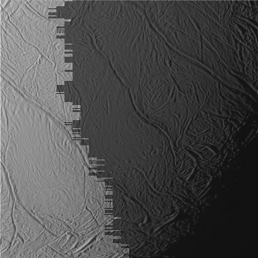
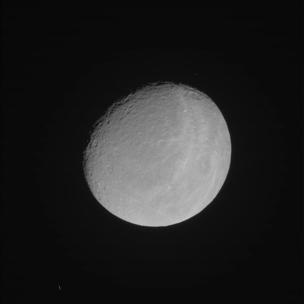

From raw frames to color mosaics
Cassini's cameras only ever took black-and-white pictures, one filter at a time. Every color picture and mosaic in Cassini OS is put together from those frames, using the spacecraft's own navigation data to know exactly where it was looking. Here is how, step by step, with real pictures from each step.
Jupiter on 29 December 2000, from 9.9 million km. The narrow-angle camera took a 3 × 3 grid of pointings, each in three filters, a minute apart. Every picture above was drawn by the Cassini OS pipeline; the rest of this page goes through each step.
01Where the raw photos come from
Cassini carried two cameras pointing the same way, the Imaging Science Subsystem. The narrow-angle camera is a telescope; the wide-angle camera sees ten times wider. Each has one 1024 × 1024 pixel sensor that only measures brightness. Color comes from two filter wheels in front of it: the camera takes one picture per filter.
Between 1997 and 2017 Cassini took about 443,000 of these frames. Each was stored on board, radioed to NASA's Deep Space Network antennas hours later, and is kept in NASA's Planetary Data System archive with a label that says when it was taken, through which filters, for how long and with which camera settings.
The filters, by wavelength
Hover a filter for its name. Red, green and blue filters together give natural color; the others (ultraviolet, infrared, methane bands) show things an eye can't see. Highlighted: the three filters of the Rhea picture below.
02What a raw frame looks like

This is a frame as the pipeline starts from it: an 8-bit PNG copy made from NASA's archive. A few things to notice:
It is gray. One filter, one brightness per pixel.
Its brightness is relative. The PNG copy is stretched so its darkest pixel is black and its brightest is white, which hides how bright things really were (NASA's archive itself keeps the camera's own numbers). Put three such frames together as red, green and blue and the colors come out wrong, so the pipeline undoes the stretch, from the frame's label, before it calibrates.
Parts are missing. The black bands are lines lost on the way to Earth. The streaks and specks are cosmic rays and stars.
It is not where you'd expect. The camera's "up" is wherever the spacecraft happened to be turned, not north.
03Cleaning up and calibrating
Each frame goes through the camera team's own calibration recipe (CISSCAL), using their calibration files. It turns the numbers the camera recorded back into what the scene really looked like: how much sunlight each spot reflects, called I/F.
- undo the PNG copy's stretch and the camera's 12-to-8-bit compression table
- subtract the electronic offset (bias) and the 2 Hz hum that makes faint horizontal bands
- subtract the dark current, the signal the sensor makes with no light at all, and fix hot pixels
- correct the sensor's slight nonlinearity
- divide by the exposure time
- divide out the flat field: dust rings on the optics and uneven pixels
- account for the gain setting, pixel binning and the sensor's slow aging
- divide by how much sunlight that filter lets through and how far the Sun was
Around that: lines lost in transmission are filled from the lines above and below, and when the camera took the same shot more than once in quick succession, the repeats are stacked to beat down noise and cosmic-ray hits.
04SPICE: where everything was
To place a picture you need to know where Cassini was, where the moon or planet was, and exactly which way the camera pointed, all at the instant the shutter opened. NASA's navigation team kept that record for the whole mission in files called SPICE kernels. Cassini OS reads them with NASA's own SPICE toolkit.
Positions of Cassini, the Sun, planets and moons over time, from radio tracking and orbit fits.
The spacecraft's orientation, many times a second, from its star trackers and gyros.
How each camera is mounted on the spacecraft, its focal length and pixel size.
Each body's radius and which way its north pole points.
Converts the spacecraft's own clock and UTC into one time scale.
Where available, pointing corrected afterward by matching stars and limbs in the pictures, plus USGS's refined pointing for Titan.
05Finding the body on the sensor
With SPICE we can work out, for any frame, exactly where its target lands on the sensor. Here is roughly how. Drag the scene to turn it; play the steps or click through them.
- distance
- –
- across the frame
- –
- down the frame
- –
- on the sensor
- –
- its radius
- –
1 · A line to the body. SPICE gives Cassini's position and the body's at the moment of the picture, so we can draw a line from one to the other, and its length is the distance. It is where the body appeared: light takes time to cross that distance (1.7 seconds from Rhea here, 33 seconds from Jupiter), so SPICE looks back by that much and corrects for Cassini's own motion.
2 · A plane at that distance. Put a flat sheet out at the body's distance, square to the direction the camera is looking.
3 · The camera's four corners. From the pointing record (CK) and the camera's mounting and lens (FK, IK), draw four lines through the four corners of the sensor. Where they meet the sheet is the rectangle of sky the picture covers. (The field of view is drawn far wider than the narrow-angle camera's real 0.35° so it can be seen.)
4 · Where the line lands among them. The body's line crosses the sheet somewhere in (or outside) that rectangle. How far across and how far down it lands is how far across and down the sensor the body is: a fraction of 1024 pixels. Move the body or the distance with the sliders: the rectangle grows with distance, but the fraction only changes when the body moves.
5 · The shortcut the code takes. Because only the fraction matters, Cassini OS skips the sheet. It turns the body's position into the camera's own directions (x across, y down, z straight out) and divides by the distance straight out, the way any pinhole camera works:
166,953 is the narrow-angle camera's focal length divided by its pixel size. The same sum, with a point a little north of the body, gives which way north is in the frame.
06Centered and turned north up
Knowing where the body's center lands, and which way is north, each frame is moved so the body sits in the middle and turned so north points up. Drag across the picture to compare.
That is what lets frames taken minutes or hours apart, from a spacecraft that kept turning, play one after another without the moon jumping around, and what lets the tiles of a mosaic go in the right place.
Rhea, 16 January 2005, from 495,886 km. SPICE put its center 4 pixels from the middle of the sensor, and the frame turns 5.4° to put north up.
07Three filters make one color picture
For a color picture the camera shot the same scene through red, green and blue filters, a few seconds apart. Each frame is calibrated, so the three are on the same brightness scale, then lined up and combined.

Lining up
Cassini moved between the three exposures, so the moon is in a slightly different spot in each. Stack them as they are and the edges split into red and blue fringes. The pipeline lines the channels up on the picture itself, with SPICE's prediction as a guide and as a check.
Natural color
Cassini's filters aren't the same as the eye's red, green and blue. A small color matrix, fitted to how each filter responds, turns them into the colors a person would have seen. "Filters straight" puts each filter directly into one color channel instead.
Calibrated or not
Without calibration, each filter keeps its PNG copy's own stretch, so each channel is as bright as it can be no matter what the camera saw, and the colors are off.
08Mosaics, tile by tile, and mosaic movies
When the body is bigger than the camera's view, Cassini took a grid of pointings. Each pointing becomes a color picture as above. SPICE says where each one goes, the tiles are nudged so their overlaps agree, their brightness is evened out along the seams, and they are blended together.
Jupiter's portrait didn't stop at one grid: Cassini went round the same 3 × 3 grid again an hour later, so it is a mosaic movie. Each new tile replaces the same spot from the lap before. Play it and watch the Great Red Spot ride Jupiter's ten-hour day; halfway through a lap, old and new tiles sit side by side, so a storm can show up twice.
Jupiter, 29 December 2000, 04:18 to 06:32 UTC: two laps of the portrait, CB2 / GRN / BL1 in each pointing (the last pointing of lap 2 has no CB2 frame, so that tile stays from lap 1).